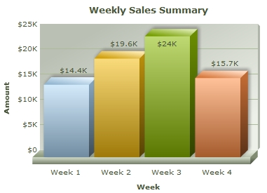

| Creating your First Chart | ||||||||||||
|
After all the warming up, it is time to build your first chart using FusionCharts XT! Let's start with a simple "Weekly Sales Summary" chart, which we will plot in 3D using a Column Chart. Once done, it should look as under, although with animation and interactivity when you view it live. Code examples discussed in this section are present in Download Package > Code > MyFirstChart folder  Follow the steps below to get started:
And that completes the recipe! Open the file weekly-sales.html in a Web Browser » Internet Explorer, Firefox, Opera, Chrome or Safari (Mac, iPhone, iPad, and Windows) and you will see an animated Column 3D chart similar to the one below: See it live! Rendering the chart as JavaScript: The same code can render the chart as JavaScript. You just have to remove the .swf from the file name and the path of the swf file from the existing code. The modified code will look like var myChart = new FusionCharts( "Column3D", ...);. This code will render a JavaScript Column 3D chart. Click here to see the complete code and a live example. |
||||||||||||
| How it works? | ||||||||||||
|
Now that you have already rendered a chart, let's get behind the scenes and understand how FusionCharts XT renders charts in a Web page. Essentially, to create a chart, you need the following four items:
What happens if Flash player is not available? |
||||||||||||
| Explanation of chart data | ||||||||||||
Let's take a closer look at the data and its XML form: |
||||||||||||
|
||||||||||||
Basically, what we have done above can be listed in the following points:
Note that you can also provide chart data in JSON format. View an example of JSON data here. Or, to learn more about FusionCharts XTJSON data format, please go through FusionCharts XT data formats > JSON section. |
||||||||||||
| Explanation of HTML and JavaScript code used to embed the chart | ||||||||||||
In the HTML wrapper file (or your Web page), the shots are called by the included JavaScript class file FusionCharts.js. Let's take a second look at the HTML code to gain an understanding of how it works. <html>
<head>
<title>My First chart using FusionCharts XT</title>
<script type="text/javascript" src="FusionCharts/FusionCharts.js">
</script>
</head>
<body>
<div id="chartContainer">FusionCharts XT will load here!</div>
<script type="text/javascript"><!--
var myChart = new FusionCharts( "FusionCharts/Column3D.swf",
"myChartId", "400", "300", "0" );
myChart.setXMLUrl("Data.xml");
myChart.render("chartContainer");
// -->
</script>
</body>
</html>
|
||||||||||||
In the very beginning, the JavaScript class file FusionCharts.js is included into the HTML using the code shown below. FusionCharts.js is smart enough to automatically load the other required JavaScript files - jquery.min.js, FusionCharts.HC.Charts.js and FusionCharts.HC.js on-demand. Make sure that all the three JavaScript files are present in the same folder in which FusionCharts.js is located. |
||||||||||||
<script type="text/javascript" src="FusionCharts/FusionCharts.js"></script> |
||||||||||||
Next, an HTML DIV with id chartContainer is created in the body of the page. |
||||||||||||
<div id="chartContainer">FusionCharts XT will load here!</div> |
||||||||||||
Now comes the essential part, which instantiates the chart. This is called the chart constructor. |
||||||||||||
var myChart = new FusionCharts( "FusionCharts/Column3D.swf", "myChartId",
"900", "300", "0" ); |
||||||||||||
Here, myChart is the name of the JavaScript object (variable) that contains reference to the chart. The following parameters are passed on to the MyChart object:
Existing users: You might be wondering what happened to the sixth parameter - registerWithJS that comes after debugMode. Starting FusionCharts XT, use of registerWithJS is deprecated. It is always set to 1 internally. Although deprecated, you can continue to use this parameter in your existing code without any problem. The code below provides the reference (relative URL) of chart data file (XML in this case). The path of the XML file is set using setXMLUrl() function as shown below: |
||||||||||||
myChart.setXMLUrl( "Data.xml" ); |
||||||||||||
The code sample above uses URL of static XML file. Ideally, you will not use a physical data file. Instead you will have 'your own server side scripts to use dynamic data and build XML. You can always provide the URL of the script to virtually relay the dynamically built data. Finally, the render() method is called and the ID of HTML DIV, where the chart is meant to be rendered, is provided. This line of code renders the desired chart inside the DIV. |
||||||||||||
myChart.render( "chartContainer" ); |
||||||||||||
|
Existing users : You might be wondering what happened to the functions like setDataURL()which you have already been using in your application. Yes - although deprecated, it will continue to work without any problem. |
||||||||||||
| Compact rendering method | ||||||||||||
FusionCharts XT also provides alternate methods of declaring and rendering a chart using JavaScript. You can use a compact single-line of JavaScript (instead of the three lines we saw in the above sample) to render a chart as shown below: |
||||||||||||
<html>
<head>
<title>My First chart using FusionCharts XT - Compact Rendering Method</title>
<script type="text/javascript" src="FusionCharts/FusionCharts.js"></script>
</head>
<body>
<div id="chartContainer">FusionCharts XT will load here!</div>
<script type="text/javascript"><!--
var myChart = FusionCharts.render( "FusionCharts/Column3D.swf",
"myChartId", "400", "300", "chartContainer", "Data.xml" );
// -->
</script>
</body>
</html>
See it live! |
||||||||||||
| The above code uses the static render function of the global FusionCharts object. This function takes all required parameters to render a chart like the chart SWF, chart ID, width & height of chart, div ID where chart will be rendered and reference to chart data.
There are additional ways of rendering a chart as well, which have been explained in the Creating charts page in "FusionCharts XT and JavaScript" section. |
||||||||||||
| Troubleshooting | ||||||||||||
If for any reason, you do not see a chart, run through the following checks: If you see an endless loading progress bar in your browser, or if the right click menu (right click at the place where the chart is supposed to be) shows "Movie not loaded", check the following:
If you get an "Error in Loading Data" message, check the following:
If you get an "Invalid Data" message, it means that the XML/JSON data is malformed. Check it again for common errors like:
To check whether your final XML is fine, open it in your browser and you will see the error. If only the text "FusionCharts XT will load here!" is displayed, check with the following:
|